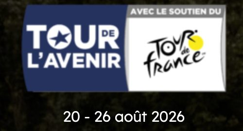

Tour de l'Avenir: the time trial starting in Les Carroz

On 24 August 2026, Les Carroz d'Arâches steps into cycling history: the village hosts the start of a Tour de l'Avenir mountain time trial. A short walk from Lodge Le Chamois, it's the perfect chance to see the peloton's future stars up close.
The Tour de l'Avenir, a springboard for champions
Nicknamed the "young riders' Tour de France", the Tour de l'Avenir gathers the world's best under-23 racers — a springboard that has revealed many champions. For its 62nd edition, the race links Normandy to Italy over seven stages, from 20 to 26 August 2026, with the support of the Tour de France.
Stage 5: Les Carroz–Flaine time trial (24 August)
Stage 5 puts Les Carroz centre stage: a mountain individual time trial starting in Les Carroz d'Arâches and heading to Flaine — 16 km with 760 m of climbing, via the Col de Pierre Carrée, finishing "gravel-style" in front of the Grandes Platières cable car. A spectacular, decisive format for the general classification: riders set off one by one at regular intervals, so you can watch them pass all day, from the village and along the climb.
Following the stage from the Lodge
The time-trial start is a few minutes' walk from the Lodge — perfect for soaking up the atmosphere with no transport hassle. Settle in the village to watch the riders launch, then head up the route to cheer them on the climb. And if you're staying earlier in the month, don't miss the Enduro MTB World Cup in Morillon (14-16 August). To plan your trip, see our guide on how to get to Les Carroz d'Arâches: these August weekends are very popular, so it's best to book early.
Fancy a stay at the Lodge?
4★ apartment for 6, south-facing terrace and Nordic bath, in the centre of Les Carroz d'Arâches.
Check availability